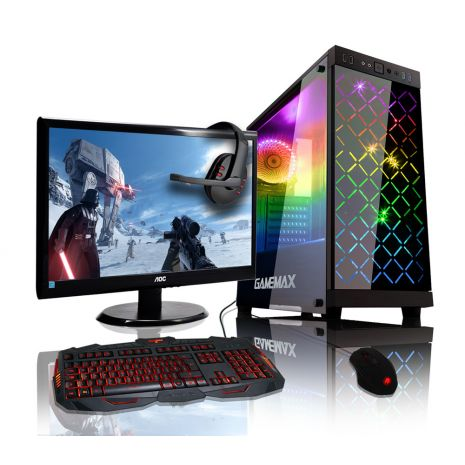

A PC game refers to a form of media that involves a player interacting with a personal computer connected to a video monitor. Personal computers are not dedicated game platforms, so there may be differences running the same game in different hardware, also the openness allows some features to developers like reduced software cost, increased flexibility, increased innovation, emulation, creation of modifications ("mods"), open hosting for online gaming (in which a person plays a video game with people who are in a different household) and others.

The best site to buy PC games Steam